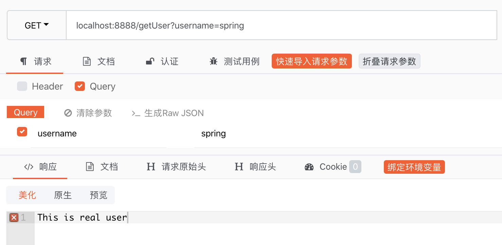

原文出处:本文由博客园博主KingJames、提供。
原文连接:https://www.cnblogs.com/idoljames/p/11715705.html
原文连接:https://www.cnblogs.com/idoljames/p/11715705.html
公共依赖配置：
<parent>
<groupId>org.springframework.boot</groupId>
<artifactId>spring-boot-starter-parent</artifactId>
<version>2.0.3.RELEASE</version>
<relativePath/>
</parent>
<properties>
<project.build.sourceEncoding>UTF-8</project.build.sourceEncoding>
<project.reporting.outputEncoding>UTF-8</project.reporting.outputEncoding>
<java.version>1.8</java.version>
<spring-cloud.version>Finchley.RELEASE</spring-cloud.version>
</properties>
<dependencyManagement>
<dependencies>
<dependency>
<groupId>org.springframework.cloud</groupId>
<artifactId>spring-cloud-dependencies</artifactId>
<version>${spring-cloud.version}</version>
<type>pom</type>
<scope>import</scope>
</dependency>
</dependencies>
</dependencyManagement>
1、创建client-server工程
1.1、client-server工程pom依赖：
<!--加上上面的公共依赖-->
<dependencies>
<dependency>
<groupId>org.springframework.cloud</groupId>
<artifactId>spring-cloud-starter-netflix-eureka-client</artifactId>
</dependency>
<dependency>
<groupId>org.springframework.cloud</groupId>
<artifactId>spring-cloud-starter-netflix-hystrix</artifactId>
</dependency>
</dependencies>
<build>
<plugins>
<plugin>
<groupId>org.springframework.boot</groupId>
<artifactId>spring-boot-maven-plugin</artifactId>
</plugin>
</plugins>
</build>
1.2、client-server工程启动类：
import org.springframework.boot.SpringApplication;
import org.springframework.boot.autoconfigure.SpringBootApplication;
import org.springframework.cloud.client.discovery.EnableDiscoveryClient;
import org.springframework.cloud.netflix.hystrix.EnableHystrix;
@SpringBootApplication
@EnableHystrix//开启断路器注解
@EnableDiscoveryClient
public class ClientApplication {
public static void main(String[] args) {
SpringApplication.run(ClientApplication.class, args);
}
}
1.3、client-server工程配置文件：client-server\src\main\resources\bootstrap.yml
server:
port: 8888
spring:
application:
name: sc-client-service
eureka:
client:
serviceUrl:
defaultZone: http://${eureka.host:127.0.0.1}:${eureka.port:8761}/eureka/
instance:
prefer-ip-address: true
1.4、编写模拟使用hystrix场景代码：
/**
* 用户接口
*/
public interface IUserService {
String getUser(String username) throws Exception;
}import org.springframework.stereotype.Component;
import com.netflix.hystrix.contrib.javanica.annotation.HystrixCommand;
import cn.springcloud.book.service.IUserService;
/**
* 具体用户接口实现类
*/
@Component
public class UserServiceImpl implements IUserService {
@Override
@HystrixCommand(fallbackMethod = "defaultUser")//降级
public String getUser(String username) throws Exception {
if ("spring".equals(username)) {
return "This is real user";
} else {
throw new Exception();
}
}
/**
* 出错则调用该方法返回友好错误
*
* @param username
* @return
*/
public String defaultUser(String username) {
return "The user does not exist in this system";
}
}import org.springframework.beans.factory.annotation.Autowired;
import org.springframework.web.bind.annotation.GetMapping;
import org.springframework.web.bind.annotation.RequestParam;
import org.springframework.web.bind.annotation.RestController;
import cn.springcloud.book.service.IUserService;
/**
* 测试API
*/
@RestController
public class TestController {
@Autowired
private IUserService userService;
@GetMapping("/getUser")
public String getUser(@RequestParam String username) throws Exception{
return userService.getUser(username);
}
}
2、创建eureka-server工程
2.1、eureka-server工程pom文件：
<!--加上上面的公共依赖-->
<dependencies>
<dependency>
<groupId>org.springframework.cloud</groupId>
<artifactId>spring-cloud-starter-netflix-eureka-server</artifactId>
</dependency>
</dependencies>
<build>
<plugins>
<plugin>
<groupId>org.springframework.boot</groupId>
<artifactId>spring-boot-maven-plugin</artifactId>
</plugin>
</plugins>
</build>
2.2、eureka-server工程启动类：
import org.springframework.boot.SpringApplication;
import org.springframework.boot.autoconfigure.SpringBootApplication;
import org.springframework.cloud.netflix.eureka.server.EnableEurekaServer;
@SpringBootApplication
@EnableEurekaServer
public class EurekaServerApplication {
public static void main(String[] args) {
SpringApplication.run(EurekaServerApplication.class, args);
}
}
2.3、eureka-server工程配置文件：eureka-server\src\main\resources\bootstrap.yml
server:
port: 8761
eureka:
instance:
hostname: localhost
client:
registerWithEureka: false
fetchRegistry: false
serviceUrl:
defaultZone: http://localhost:8761/eureka/
3、启动2个工程
访问接口：
第一次传入spring

第二次传入：springcloud

说明执行了 fallbackMethod 定义的指定方法！